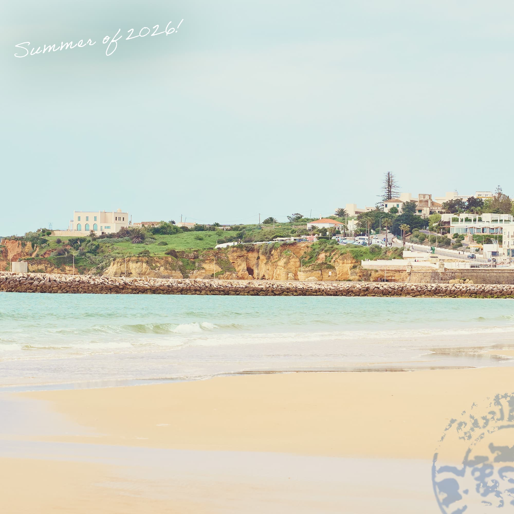
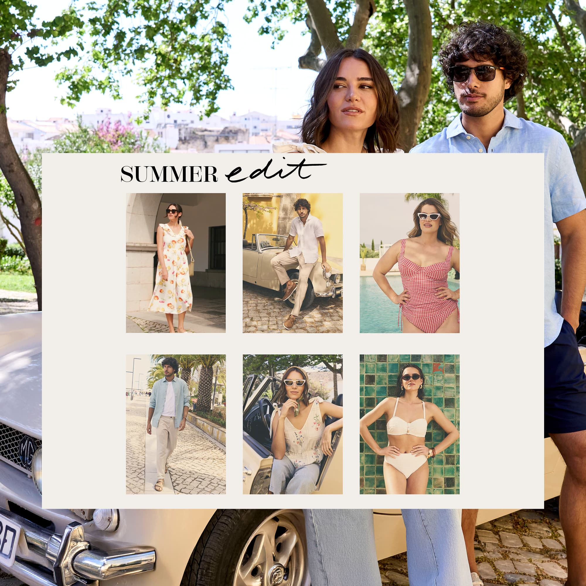
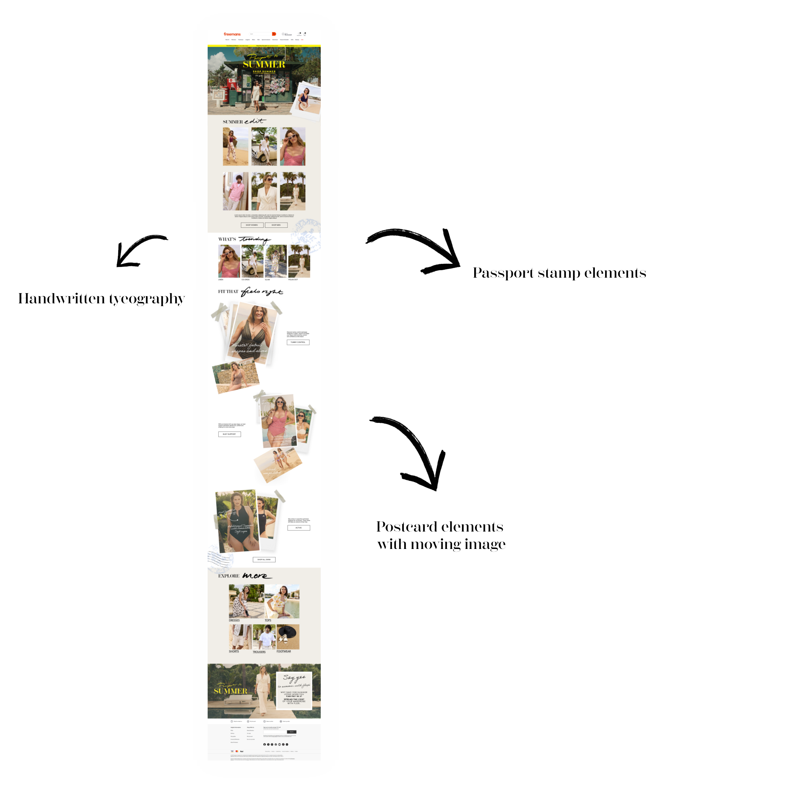
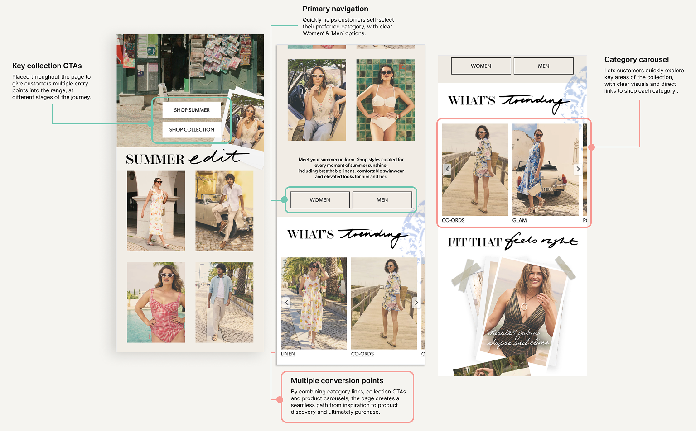
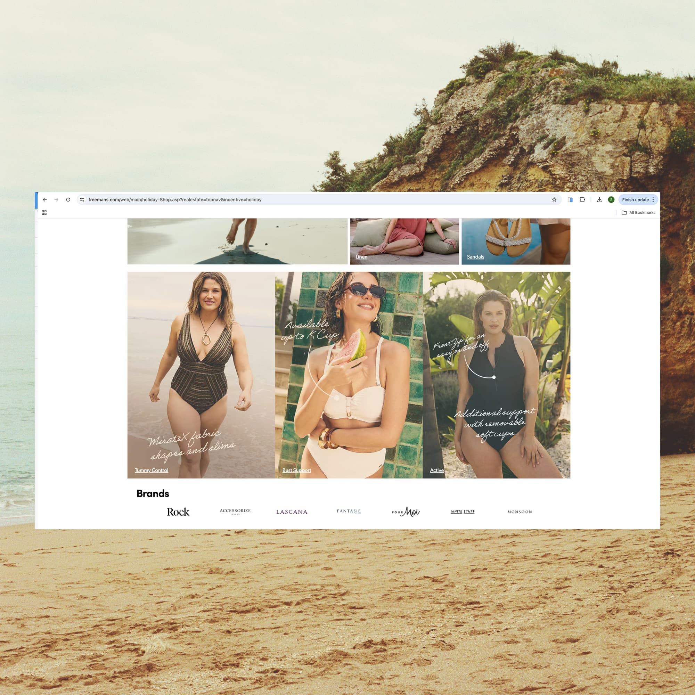
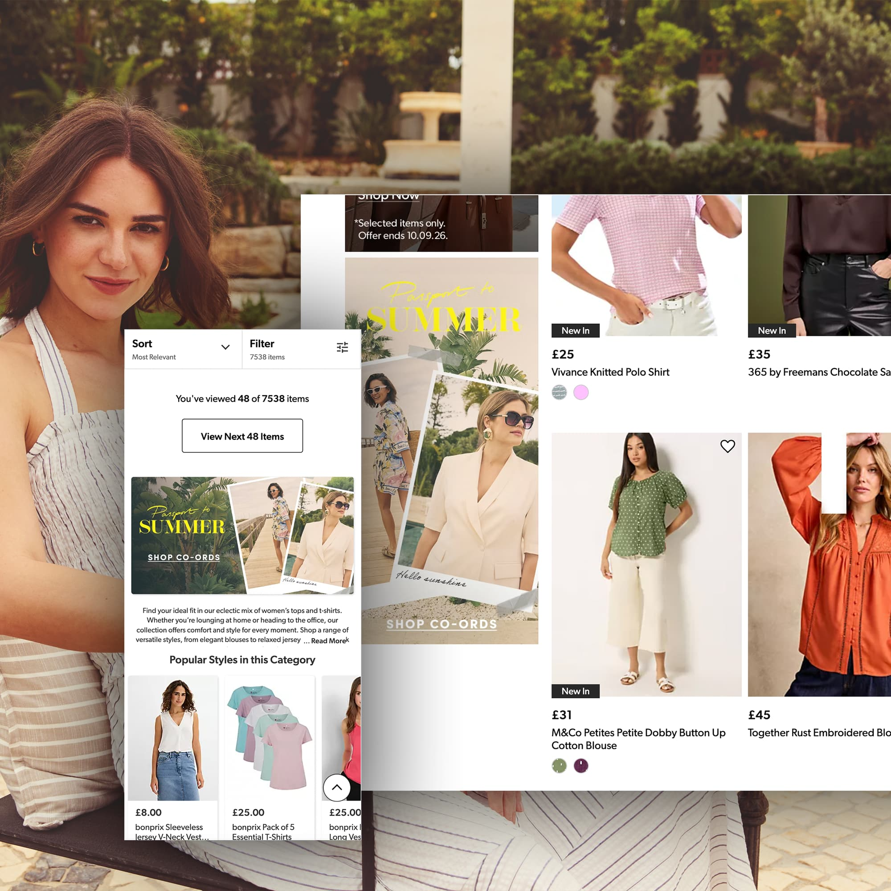
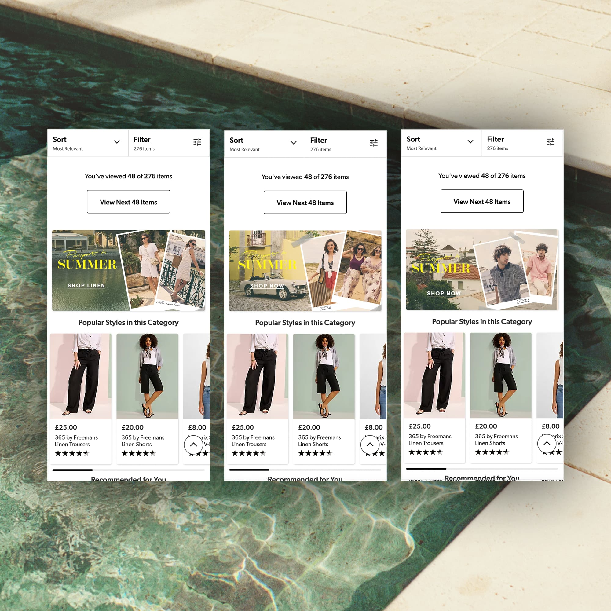
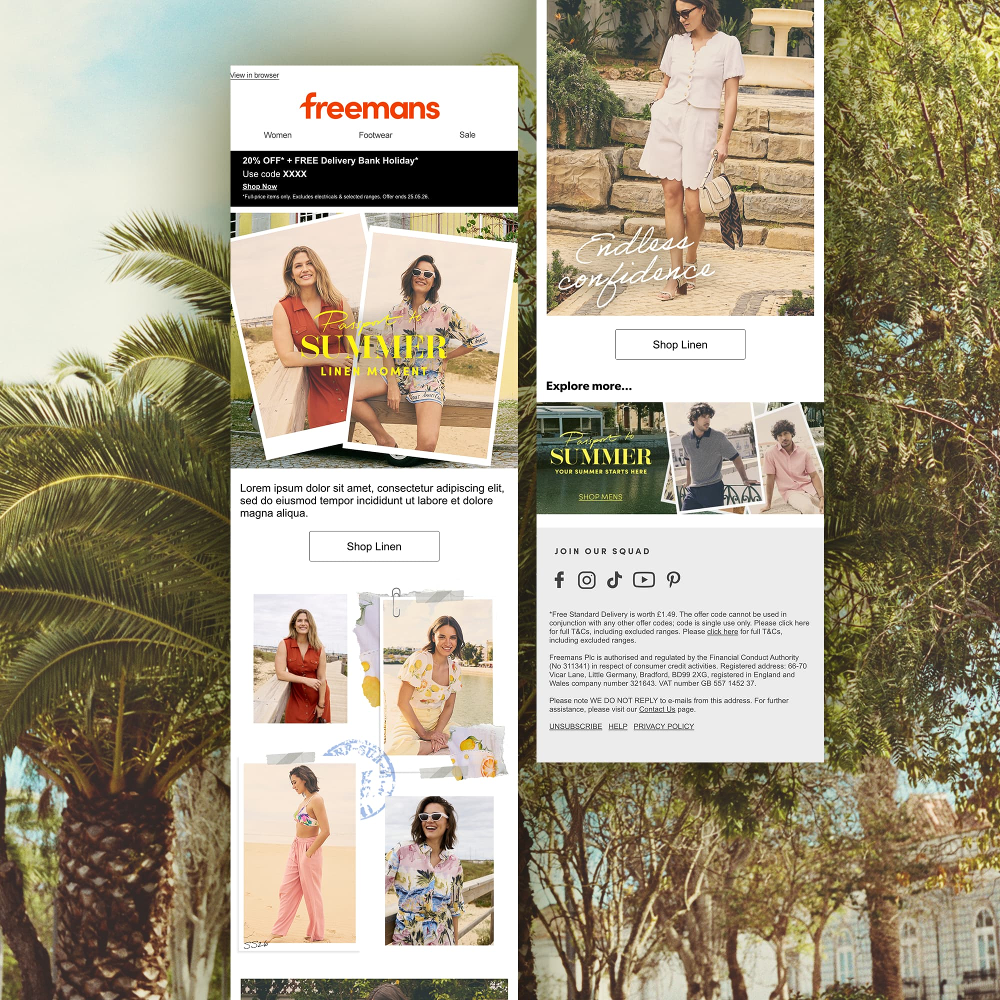
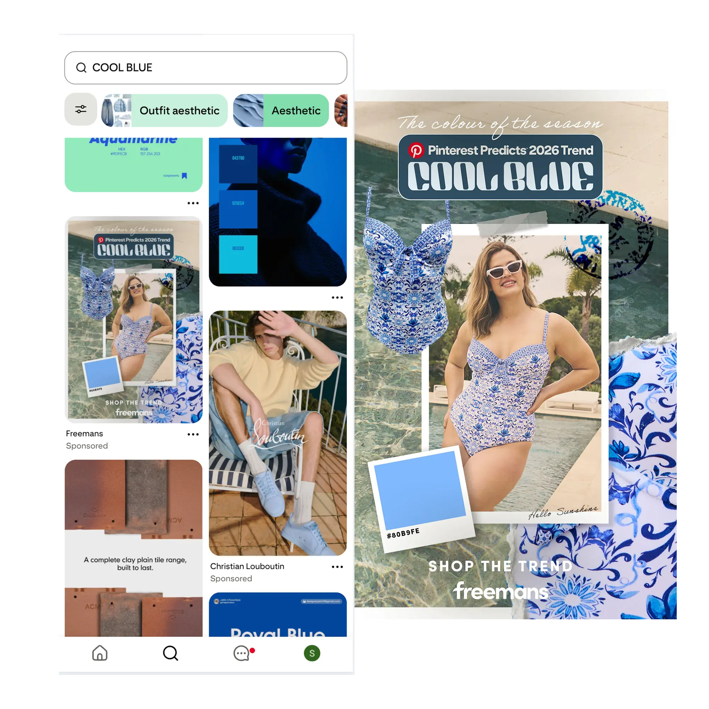

Inspired by European aesthetics, the campaign captured the spirit of summer travel through vibrant, lifestyle-led imagery. The visual direction centred around a relatable summer narrative — following a woman navigating a season of events, family and holidays, while embracing the freedom to make time for herself.


Bringing the campaign experience to life by translating the creative rationale into a cohesive digital system. I developed a series of visual elements — including typography, section treatments and graphic details — to create a consistent visual language throughout the landing page.
Visit page ↗
Customer Journey
The landing page was structured to create a clear path from campaign inspiration to product discovery and purchase. Multiple entry points were introduced throughout the experience, allowing customers to move into relevant collections at different stages of their journey. Category carousels made key product areas easy to explore, while prominent calls to action provided clear routes into shopping. Together, these elements balanced the editorial feel of the campaign with the commercial goal of encouraging product discovery and conversion.

The campaign experience extended beyond the landing page, with campaign elements distributed across the wider Freemans website. Onsite banners linked customers directly to key sections of the landing page, helping them discover the three women's swimwear categories across different styles and sizes.
Created a flexible visual system that translated the campaign identity across a range of digital touchpoints, from onsite banners and product pages to paid social and email, ensuring a consistent and cohesive experience while adapting the creative to each format and platform.


To carry the Passport to Summer concept beyond the landing page, we developed a series of CRM assets that brought the campaign’s visual language into the inbox. Vibrant imagery, bold typography and clear calls to action were used to create engaging email journeys that inspired customers to explore the different summer collections and discover the wider campaign.

Social provided an important entry point into the campaign, introducing customers to the Passport to Summer concept before leading them into the wider digital experience. I developed and adapted creative across Meta and Pinterest, using the campaign's established visual language while tailoring the composition and messaging to each platform.

The creative was tailored to the behaviour and visual conventions of each platform, from social-first compositions on Meta to trend-led content designed for Pinterest.